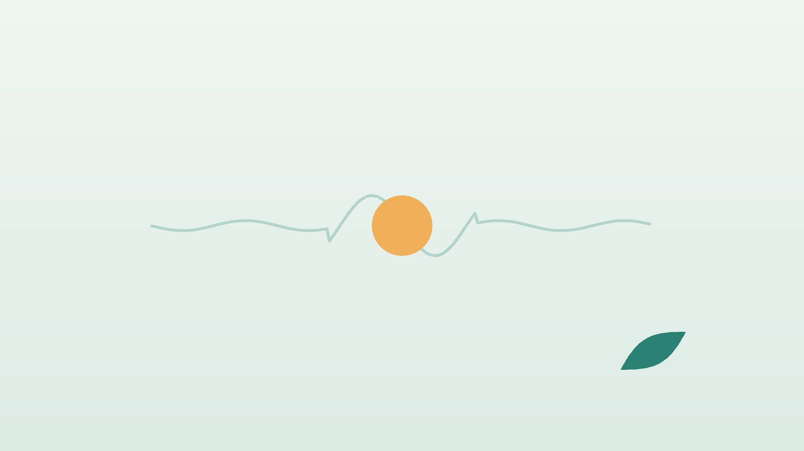

건강 칼럼 · 인천 담결림 한의원
자고 일어나니 담이 결렸다면, 담 결림(근막통증) 한방 치료

나의 결림, 이런 모습인가요?
- 아침에 일어나니 목이나 날개뼈 안쪽이 결려 고개를 돌리기 어렵다
- 숨을 깊게 들이쉬거나 몸을 비틀 때 등과 옆구리가 콕 결린다
- 손으로 누르면 유난히 아프고 단단하게 뭉친 자리가 있다
- 뭉친 곳을 누르면 머리, 팔, 가슴 쪽까지 통증이 뻗친다
- 오래 앉아 일하거나 스트레스가 쌓이면 같은 자리가 자주 결린다
- 찬 바람이나 에어컨을 쐰 다음 날 더 뻣뻣하다
이 체크리스트는 진단 도구가 아니라 상담이 필요한지 가늠해 보는 참고용입니다.
'담'이란 무엇이고, 근막통증은 왜 생기나요?
한국에서 '담'은 원래 한의학 용어인 담(痰)에서 온 말로, 몸의 진액이 제대로 돌지 못하고 뭉친 것을 뜻합니다. 일상에서는 갑자기 근육이 뭉쳐 결리고 움직이기 힘든 상태를 통틀어 '담 걸렸다'고 부르게 되었고, 현대 의학의 진단명으로는 대부분 근막통증증후군에 해당합니다.
근막통증 연구의 기초를 놓은 트래블(Travell)과 사이먼스(Simons)는 근육 속 띠처럼 팽팽해진 부분에서 유난히 예민하게 눌리는 점을 통증 유발점(trigger point)이라 하고, 이 점을 누르면 멀리 떨어진 자리까지 정해진 패턴으로 통증이 퍼진다고 설명했습니다. 목 뒤 근육의 유발점은 관자놀이 두통을, 날개뼈 안쪽 근육은 어깨 앞과 팔 쪽 통증을 부르는 식입니다. 나쁜 자세, 반복 작업, 갑작스러운 무리, 수면 부족과 긴장이 유발점을 깨우는 흔한 계기입니다.
'담 결림'이 아닐 수 있는 위험 신호
- 가슴 한가운데가 조이거나 누르듯 아프고, 걷거나 계단을 오를 때 심해진다 (협심증·심근경색 의심, 119)
- 통증이 왼팔, 턱, 명치로 퍼지며 식은땀, 숨참, 메스꺼움이 함께 온다
- 갑자기 숨이 차면서 한쪽 가슴이 찌르듯 아프다 (기흉·폐색전증 확인)
- 등이 찢어지는 듯 갑자기 극심하게 아프다 (대동맥 질환, 응급)
- 결린 자리를 따라 며칠 뒤 띠 모양으로 물집이 올라왔다 (대상포진)
- 열, 체중 감소, 밤에도 쉬지 않는 통증이 있거나 팔다리가 저리고 힘이 빠진다
고혈압·당뇨·흡연력이 있거나 50대 이후 처음 생긴 가슴·등 결림은 심전도 같은 검사를 먼저 받으세요.
한의학은 담 결림을 어떻게 보나요?
한의학에서 담음(痰飮)은 몸속 물길이 막혀 생긴 끈적한 노폐물을 말하며, 『금궤요략』에 '담음' 편이 따로 있을 만큼 오래 다뤄 온 개념입니다. 『동의보감』은 담이 몸 곳곳으로 흘러 다니며 결리고 아프게 한다고 보아, 아픈 자리가 옮겨 다니고 몸이 무거운 결림을 담음의 증상으로 설명했습니다. '담 결렸다'는 우리말이 여기서 나왔습니다.
또 『영추』 경근(經筋)편은 근육과 힘줄의 병을 경락을 따라 묶어 설명하고 '아픈 곳을 혈로 삼는다(以痛爲輸)'고 하였습니다. 후대에 손사막은 눌러서 '아, 그곳!' 하는 자리를 아시혈(阿是穴)이라 불렀는데, 현대의 통증 유발점과 겹치는 부분이 많습니다. 그래서 한의학의 근막통증 치료는 뭉친 자리를 직접 찾아 푸는 것과, 담음·기체·어혈·찬 기운처럼 결림을 반복시키는 몸 상태를 다스리는 것을 함께 합니다.
나의 결림은 어떤 유형일까?
1. 담음유주(痰飮流注) 옮겨 다니는 결림
- 이런 분에게 많아요
- 몸이 무겁고 잘 붓는 분, 기름진 음식을 즐기는 분
- 나타나는 모습
- 결리는 자리가 날마다 바뀌고 묵직하게 당긴다
- 함께 오는 몸의 신호
- 속 메스꺼움, 어지럼, 흐린 날 악화
- 진찰에서 보이는 모습
- 혀가 붓고 설태가 두껍고 미끄러움
- 치료 방향
- 뭉친 담음을 삭이고 물길을 여는 방향 (이진탕·도담탕 계열)
- 오늘부터 해 볼 것
- 야식과 단 음료를 2주만 줄여 보세요.
2. 기체(氣滯) 긴장하면 굳는 결림
- 이런 분에게 많아요
- 업무 스트레스가 크고 한숨이 잦은 분
- 나타나는 모습
- 어깨와 옆구리, 날개뼈 사이가 조여 오듯 결린다
- 함께 오는 몸의 신호
- 가슴 답답함, 두통, 소화불량
- 진찰에서 보이는 모습
- 혀 가장자리가 붉고 맥이 팽팽함
- 치료 방향
- 막힌 기운을 풀어 긴장을 내리는 방향 (시호소간산 계열)
- 오늘부터 해 볼 것
- 한 시간에 한 번 어깨를 크게 돌리고 숨을 길게 내쉬세요.
3. 어혈(瘀血) 한 자리를 찌르는 결림
- 이런 분에게 많아요
- 무거운 것을 들다 삐끗했거나 부딪친 분
- 나타나는 모습
- 통증 자리가 정해져 있고 찌르듯 아프며 밤에 더하다
- 함께 오는 몸의 신호
- 누르면 심한 압통, 멍울
- 진찰에서 보이는 모습
- 혀가 어둡고 맥이 껄끄러움
- 치료 방향
- 뭉친 혈을 풀어 순환을 돕는 방향 (당귀수산 계열)
- 오늘부터 해 볼 것
- 처음 2~3일은 무리한 마사지를 피하세요.
4. 풍한(風寒) 찬 바람 맞고 굳은 결림
- 이런 분에게 많아요
- 에어컨이나 선풍기 바람을 맞으며 잔 분
- 나타나는 모습
- 목 뒤와 어깨가 뻣뻣해 고개를 돌리기 힘들다
- 함께 오는 몸의 신호
- 으슬으슬함, 콧물, 몸살 기운
- 진찰에서 보이는 모습
- 설태가 얇고 희며 맥이 뜨고 긴장됨
- 치료 방향
- 찬 기운을 흩고 목덜미를 푸는 방향 (갈근탕 계열)
- 오늘부터 해 볼 것
- 목에 얇은 스카프를 두르고 따뜻한 샤워를 하세요.
한의원에서는 어떻게 진찰하나요?
- 위험 신호 확인: 가슴 통증, 숨참, 열, 저림이 있는지 먼저 여쭙고 필요하면 다른 진료를 안내합니다.
- 유발점 촉진: 근육을 손끝으로 훑어 띠처럼 뭉친 부분과 눌렀을 때 통증이 퍼지는 자리를 찾습니다.
- 움직임 평가: 목 돌리기, 팔 들기, 허리 비틀기 범위를 보고 어떤 근육이 붙잡혀 있는지 확인합니다.
- 설진·맥진: 담음, 기체, 어혈, 찬 기운 가운데 무엇이 앞서는지 판단합니다.
담 결림은 어떻게 치료하나요?
1. 침 치료
먼저 찾아 둔 유발점(아시혈)에 침을 놓아 뭉친 근육을 풀고, 결림 부위에 따라 경락의 혈자리를 더합니다.
- 견정(肩井): 목뿌리와 어깨 끝을 잇는 선의 가운데, 승모근 위. 목·어깨 결림에 씁니다.
- 천종(天宗): 날개뼈 한가운데 오목한 곳. 날개뼈 주변이 결려 팔까지 당길 때 씁니다.
- 고황(膏肓): 넷째 등뼈 아래에서 양옆으로 손가락 네 마디 바깥, 날개뼈 안쪽 가장자리. 등 결림에 씁니다.
- 후계(後谿): 주먹을 쥐었을 때 새끼손가락 쪽 손바닥 주름 끝. 목이 돌아가지 않을 때 먼 자리로 씁니다.
침 치료가 근막통증의 통증을 줄였다는 연구들이 있지만 방법과 규모가 제각각이어서, 치료 전후 통증 점수와 움직임 범위로 효과를 확인하며 진행합니다.
2. 약침과 추나·온열 요법
약침은 단단한 유발점에 소량의 약액을 넣어 근육의 긴장을 빠르게 덜어 줍니다. 비뚤어진 자세로 같은 자리가 반복해 결리는 분께는 추나 요법을 시행하며, 진찰 후 적용 여부를 상담합니다. 찬 바람에 굳었다면 온열 요법도 더합니다.
3. 한약
자주 재발하거나 피로, 소화 불편, 스트레스가 겹친 분은 유형에 맞는 탕약을 함께 처방합니다. 진통제나 근이완제, 혈압약 등을 드시고 있다면 알려 주세요. 확인해서 처방합니다.
원장님이 네이버 블로그에 진료 이야기와 건강 정보를 꾸준히 올리고 있습니다. 더 많은 이야기는 블로그에서 확인해 보세요.
블로그 보기치료는 어떤 순서로 진행되나요?
- 첫 진료 위험 신호를 걸러 내고, 유발점과 움직임 제한을 확인한 뒤 바로 침과 약침으로 풀어 드립니다.
- 1~2주 급하게 결린 경우 주 2~3회 치료로 움직임을 먼저 회복합니다.
- 2~4주 반복되는 결림은 자세와 근육 불균형을 함께 다루고, 필요하면 한약을 더합니다.
- 재발 예방 집에서 하는 지압과 스트레칭을 익혀 같은 자리가 다시 뭉치지 않게 합니다.
갑자기 생긴 담 결림은 몇 번의 치료로 풀리는 경우가 많고, 몇 달째 반복되는 결림은 자세와 생활 습관을 함께 바꿔야 해서 기간이 더 걸립니다.
결림을 덜 부르는 생활 관리
- 집에서 하는 지압: 뭉친 자리를 엄지나 테니스공으로 지그시 30초 누르고 천천히 놓기를 3~4번 합니다.
- 따뜻하게: 결린 첫날부터 따뜻한 샤워나 찜질로 근육을 데우는 것이 대개 편합니다. 부딪쳐 붓고 열감이 있다면 처음 1~2일은 차게 합니다.
- 작게 움직이기: 아프다고 아예 고정하기보다 아프지 않은 범위에서 목과 어깨를 천천히 돌려 줍니다.
- 베개와 자세: 옆으로 누웠을 때 목이 일자가 되는 높이의 베개를 쓰고, 모니터는 눈높이에 맞춥니다.
다른 진료가 함께 필요한 경우
- 가슴 통증과 숨참이 함께 있다면 순환기내과나 응급실 진료가 먼저입니다.
- 팔이나 손이 저리고 힘이 빠지면 목 디스크 확인을 위해 영상 검사를 받으세요.
- 온몸 여기저기가 석 달 넘게 아프고 잠을 못 잔다면 섬유근육통 평가가 필요할 수 있습니다.
- 교통사고 뒤 생긴 결림은 영상 검사로 골절이 없는지 확인하세요. 자동차보험으로 한방 진료를 받을 수 있습니다.
자주 묻는 질문 Q&A
- Q1. 담 결림은 저절로 낫나요?
- 가볍게 결린 경우 며칠에서 두세 주 안에 풀리는 경우가 많습니다. 일주일이 지나도 움직이기 힘들거나 같은 자리가 반복된다면 진료를 받아 보세요.
- Q2. 파스와 찜질 중 무엇이 좋나요?
- 근육이 굳은 결림에는 따뜻하게 하는 쪽이 편한 경우가 많습니다. 파스는 피부가 약한 분은 오래 붙이지 마세요.
- Q3. 숨 쉴 때 옆구리가 결리는데 담인가요?
- 근육 결림일 수 있지만 갑자기 숨이 차거나 기침, 열이 있다면 폐 질환을 먼저 확인해야 합니다.
- Q4. 왼쪽 가슴과 등이 같이 결려요.
- 운동하거나 걸을 때 심해지고 식은땀이 나면 심장 문제일 수 있으니 바로 응급실로 가세요.
- Q5. 마사지를 세게 받으면 빨리 풀리나요?
- 너무 세게 주무르면 근육이 오히려 놀라 더 아플 수 있습니다. 지그시 누르는 정도가 적당합니다.
- Q6. 약침은 아픈가요?
- 주입할 때 뻐근한 느낌이 잠시 있고, 하루 정도 묵직할 수 있습니다.
- Q7. 자주 담이 결리는 체질이 있나요?
- 한의학에서는 담음이 잘 쌓이거나 긴장이 잦은 몸에서 반복된다고 봅니다. 체질과 생활 습관을 함께 살펴 드립니다.
- Q8. 교통사고 뒤에 목과 등이 결려요.
- 자동차보험으로 침, 약침, 추나 치료를 받을 수 있습니다. 사고 직후 통증이 심하면 골절 여부부터 확인하세요.
문원열 대표원장한의사 · 365스마일한의원
인천 서구 가정동 한자리에서 10년 넘게 진료하며, 환자 한 분 한 분의 아픔을 깊이 들여다보고 근본적인 원인을 찾는 진료를 지향합니다.
원장 소개 보기 →진료 안내
- 진료시간
- 평일 09:00~20:00 (점심시간 13:00~14:00)
토·일·공휴일 09:00~15:00 - 주소
- 인천광역시 서구 가경주로 46, 2층 (가정동)
인천2호선 가정중앙시장역 인근
영상으로 길 안내 보기 → - 주차
- 한의원 건물 바로 앞 1층 도원주차장
진료시간은 사정에 따라 바뀔 수 있으니 방문 전 전화로 확인해 주세요.
함께 읽으면 좋은 칼럼
건강 칼럼 전체 보기 →
참고 자료
- Simons DG, Travell JG, Simons LS. Travell & Simons' Myofascial Pain and Dysfunction: The Trigger Point Manual. 2nd ed. Williams & Wilkins, 1999
- 『영추(靈樞)』 경근(經筋)편, 이통위수(以痛爲輸)
- 『금궤요략(金匱要略)』 담음해수병맥증병치(痰飮咳嗽病脈證幷治)
- 질병관리청 국가건강정보포털 — 원문
※ 이 글은 일반적인 건강 정보이며, 개인의 상태에 따라 치료 방법과 결과는 다를 수 있습니다. 정확한 진단과 치료는 진료를 통해 결정됩니다. 침·약침 시술 후 드물게 멍, 통증 등이 생길 수 있습니다.